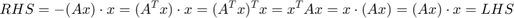
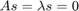
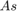

Lab Assignment 4: Numerical Methods for Eigenvalue Problems
Contents
clear, rng(0)
addpath(fullfile(pwd, 'M-Files'))
Task 1: Shift-and-Invert transform
dbtype ShiftInvertTransform
1 function [apply, recover, elapsed] = ShiftInvertTransform(A, sigma) 2 %SHIFTINVERTTRANSFORM Computes a shift-invert transformation. 3 % 4 % APPLY=SHIFTINVERTTRANSFORM(A,SIGMA) returns a function handle such that 5 % APPLY(X) = (A - SIGMA*EYE(SIZE(A))\X = INV(A - SIGMA*EYE(SIZE(A)))*X. 6 % Internally, the shifted matrix is factorized only once. 7 % 8 % [APPLY,RECOVER]=SHIFTINVERTTRANSFORM(A,SIGMA) also returns a 9 % function handle to the inverse transform 10 % RECOVER(MU) = SIGMA + 1./MU. 11 % 12 % SHIFTINVERTTRANSFORM(A) uses a zero shift, SIGMA = 0.0. 13 % 14 % See also SHIFTTRANSFORM. 15 16 if nargin < 2 || isempty(sigma) 17 sigma = 0.0; 18 end 19 elapsedTime = 0; 20 21 % TODO 22 [m n]=size(A); 23 [L U p]=lu(A-sigma.*eye(m)); 24 function y = Apply(x) 25 tic; 26 z=L\p*x; 27 y=U\z; 28 elapsedTime = elapsedTime + toc; 29 end 30 31 function lambda = Recover(mu) 32 if any(abs(mu) < eps) 33 warning( ... 34 [mfilename ':SingularTransform'], ... 35 'Singular transformation') 36 end 37 lambda=sigma+mu^(-1); 38 end 39 function t = Elapsed 40 t = elapsedTime; 41 end 42 apply = @Apply; 43 recover = @Recover; 44 elapsed = @Elapsed; 45 end
Test case
A = [4 -4 -3 -3 2; -4 -2 5 0 -4; -3 5 5 5 4; -3 0 5 3 5; 2 -4 4 5 2]; sigma = 3; [apply, recover] = ShiftInvertTransform(A, sigma); x = [3; 3; -1; 2; -3]; % arbitrary input y = [-3979/4966; -978/2483; -53/191; -1655/4966; 977/4966]; % exact result assert(AlmostEqual(apply(x), y)) assert(AlmostEqual(recover(1.0), 4.0))
Data for later tasks
n = 30;
density = min(5/n, 0.5);
rc = 0.01;
A = Symmetrize(sprand(n, n, density, rc));
k = min(n, 5);
sigma = 0; % shift/target
tol = eps(100*n);
maxit = 100*n;
Task 2: Power method in MATLAB
dbtype Power
1 function [s, lambda, converged, rnorm] = Power(apply, n, tol, maxit) 2 %POWER Eigenpair of a symmetric matrix via the power method. 3 % [S,LAMBDA]=POWER(A) computes the dominant eigenvalue LAMBDA and the 4 % associated eigenvector S of a symmetric matrix A i.e. 5 % A*S = S*LAMBDA. 6 % 7 % [S,LAMBDA]=POWER(APPLY,N) where APPLY is a function that computes a 8 % matrix-vector product APPLY(X)=A*X and N=LENGTH(A). 9 % 10 % POWER(APPLY,N,TOL,MAXIT) uses the convergence test 11 % MAX(ABS(A*S - S*LAMBDA)) < TOL 12 % or terminates the iteration after MAXIT steps. 13 % 14 % [S,LAMBDA,CONVERGED]=POWER(..) indicates convergence to the specified 15 % tolerance if CONVERGED is TRUE. 16 % 17 % [S,LAMBDA,CONVERGED,RNORM]=POWER(..) returns an array of residual norms 18 % MAX(ABS(A*S - S*LAMBDA)), with one value for each iteration. 19 % 20 % See also EIG, EIGS, EIGENPAIRS, SHIFTINVERT. 21 22 narginchk(1, 4) 23 24 % Accommodate numeric operators 25 if isnumeric(apply) 26 assert(ismatrix(apply), 'Operator should be matrix-valued') 27 n = length(apply); 28 apply = @(x) apply*x; % uniform interface to matrix product 29 end 30 31 if nargin < 3 || isempty(tol) 32 tol = eps(10); 33 end 34 35 if nargin < 4 || isempty(maxit) 36 maxit = 500; 37 end 38 39 % Initial estimate of eigenvector 40 s = 2*rand(n, 1) - 1; 41 s = s/norm(s); 42 43 % Initialise 44 iter = 0; 45 converged = false; 46 rnorm = zeros(1, maxit); 47 lambda=1; 48 while iter < maxit && ~converged 49 50 assert(Compare(norm(s), 1) < tol, 'Invariant') 51 52 % Apply operator 53 % TODO 54 As=apply(s); 55 56 % Estimate eigenvalue magnitude 57 % TODO 58 59 lambda=norm(As); 60 61 62 % Eigenvalue sign 63 lambda=sign(dot(As,s))*lambda; 64 65 % Convergence test 66 iter = iter + 1; 67 rnorm(iter) = norm(Compare(As, s*lambda), inf); 68 converged = rnorm(iter) < tol; 69 70 % Normalise result (or next iterate) 71 s = As/norm(As); 72 73 end 74 75 % Release unused entries 76 rnorm(iter + 1 : end) = []; 77 78 if ~converged && nargout < 3 79 message = 'Didn''t converge to desired tolerance of %g in %d steps'; 80 warning(message, tol, iter) 81 end
[apply, recover] = ShiftInvertTransform(A, sigma);
[s, lambda, converged, rnorm] = Power(apply, n, tol, maxit); assert(converged) assert(AlmostEqual(apply(s), s*lambda)) assert(AlmostEqual(norm(s), 1.0)) assert(rnorm(end) < tol) % Task 3: Power method in C++ dbtype(fullfile('Header Files', 'power.hpp'))
1 #ifndef INCLUDED_POWER_HPP
2 #define INCLUDED_POWER_HPP
3
4 #include <iostream>
5
6 #include "scale.hpp"
7 #include "types.hpp"
8
9 #include <algorithm> // for std::copy, std::generate
10 #include <cmath> // for std::sqrt
11 #include <functional> // for std::bind
12 #include <numeric> // for std::inner_product
13 #include <random> // for std::uniform_real_distribution
14
15 namespace engsci331
16 {
17
18 // Returns (uniform) relative difference between its arguments
19 inline double compare(double const& x, double const& y)
20 {
21 using std::abs;
22 const double scale = 0.5*(abs(x) + abs(y));
23 return abs(x - y) / (1 + scale);
24 }
25
26 // Dot product of two arrays of length n
27 inline double dot(double const* x, double const* y, size_type n)
28 {
29 return std::inner_product(x, x + n, y, 0.0);
30 }
31
32 // Two-norm of a vector of length n
33 inline double norm(double const* x, size_type n)
34 {
35 return std::sqrt(dot(x, x, n));
36 }
37
38 template<class MatrixProductOperator>
39 inline bool power(
40 MatrixProductOperator apply,
41 size_type n,
42 double & lambda,
43 double * s,
44 double * s_image,
45 double const& tol,
46 size_type maxit)
47 {
48 // Random initial iterate
49 std::default_random_engine generator;
50 std::uniform_real_distribution<double> distribution(-1, 1);
51 std::generate(s, s + n, std::bind(distribution, generator));
52 //std::fill(s, s + n, 1.0); // Perhaps useful for testing
53
54 // Normalise initial iterate
55 // TODO
56 for(int i=0;i<n;i++){
57 s[i]=(s[i])/norm(s,n);
58 }
59 size_type iter = 0;
60 bool converged = false;
61 while (iter++ < maxit && !converged)
62 {
63 // Matrix-vector product
64 // TODO
65 apply(s,s_image);
66 // Estimate eigenvalue magnitude
67 // TODO
68 lambda=norm(s_image,n);
69 lambda=fabs(lambda);
70 // Eigenvalue sign
71 // TODO
72 double res=dot(s,s_image,n);
73 double sign=res>0?1.0:-1.0;
74 lambda=sign*lambda;
75 // Convergence test
76 double mismatch = 0;
77 // TODO: Maximum relative residual, using "compare(.., ..)"
78 for(int i=0;i<n;i++){
79 double current=compare((s[i])*lambda,s_image[i]);
80 mismatch=std::max(mismatch,current);
81 }
82 converged = mismatch < tol;
83
84 // Normalise eigenvector estimate
85 for(int i=0;i<n;i++)
86 s[i]=(s_image[i])/norm(s_image,n);
87 }
88 return converged;
89 }
90
91 } // namespace
92
93 #endif // INCLUDED_POWER_HPP
AssertMexExists('PowerMex')
[s, lambda, converged] = PowerMex(apply, n, tol, maxit); assert(converged) assert(AlmostEqual(apply(s), s*lambda)) assert(rnorm(end) < tol)
Task 4: Multiple eigenpairs via deflation in MATLAB
dbtype EigenPairs
1 function [S, lambdas, converged, r] = EigenPairs(apply, n, k, varargin)
2 %EIGENPAIRS Dominant eigenpairs of a symmetric matrix operator.
3 % [S,L]=EIGENPAIRS(A) computes the complete eigendecomposition
4 % A*S = S*DIAG(L)
5 % of a matrix A, where {S(:,i), L(i)} is the i'th eigenpair.
6 %
7 % [S,L]=EIGENPAIRS(APPLY,N) works with a function APPLY that computes a
8 % matrix-vector product APPLY(X)=A*X with N=LENGTH(A).
9 %
10 % EIGENPAIRS(APPLY,N,K) returns the partial eigendecomposition comprising
11 % just the K dominant eigenpairs.
12 %
13 % EIGENPAIRS(APPLY,N,K,TOL,MAXIT) uses the convergence test
14 % MAX(ABS(APPLY(S) - S*DIAG(LAMBDA))) < TOL
15 % or terminates the iteration for any single eigenpair after MAXIT steps.
16 %
17 % [S,L,CONVERGED]=EIGENPAIRS(..) indicates convergence to the specified
18 % tolerance if CONVERGED is TRUE.
19 %
20 % See also EIG, EIGS, POWER, SHIFTINVERT.
21
22 narginchk(1, inf)
23
24 if isnumeric(apply)
25 assert(ismatrix(apply), 'Operator should be matrix-valued')
26 assert(isreal(apply), 'Operator should be real-valued')
27 assert(isequal(apply', apply), 'Operator should be symmetric')
28 if nargin < 2 || isempty(n)
29 n = length(apply);
30 end
31 apply = @(x) apply*x; % uniform interface to matrix product
32 end
33
34 if nargin < 3 || isempty(k)
35 k = n;
36 end
37
38 assert(k <= n)
39
40 % Pre-allocate outputs
41 S = zeros(n, k);
42 lambdas = zeros(k, 1);
43 r = cell(1, k); % maximum relative residuals for each eigenpair
44
45 for i = 1 : k
46
47 % Deflate locked eigenpairs
48 % TODO
49 % deflated = @(x) apply(x) - "TODO";
50
51 deflated = @(x) Deflate(lambdas, S, x, apply(x));
52
53 % Determine next eigenpair
54 % TODO
55 [s, lambda, converged, rnorm] = Power(deflated, n, varargin{1},varargin{2});
56
57 if ~converged
58 break;
59 end
60
61 % Expand outputs (locked eigenpairs)
62 % TODO
63 S(:,i)=s;
64 lambdas(i,1)=lambda;
65 r{1,i}=rnorm;
66
67 end
[S, mu, converged, r] = EigenPairs(apply, n, k, tol, maxit);
assert(converged) assert(AlmostEqual(apply(S), S*diag(mu))) assert(AlmostEqual(S'*S, eye(k)))
Tasks 5 & 6: Multiple eigenpairs via deflation in C++
dbtype(fullfile('Header Files', 'eigenpairs.hpp')) %% Task 5
AssertMexExists('DeflateMex')
x = rand(n, 1); y = rand(n, 1); assert(AlmostEqual( ... Deflate(mu, S, x, y), ... DeflateMex(mu, S, x, y)))
AssertMexExists('EigenPairsMex')
[S, mu, converged] = EigenPairsMex(apply, n, k, tol, maxit);
assert(converged) assert(AlmostEqual(apply(S), S*diag(mu))) assert(AlmostEqual(S'*S, eye(k)))
Task 7: Theory & discussion
TODO: Please complete Task 7 here
7.b) The most computationally expensive operation in powermex and eigenpairsmex is the matrix multiplication in the apply command. This is implemented in matlab, hence the most expensive operation in both the MEX and matlab implementations have similar speed.
7.c) 
7.d) When ,  vanishes on the graph.